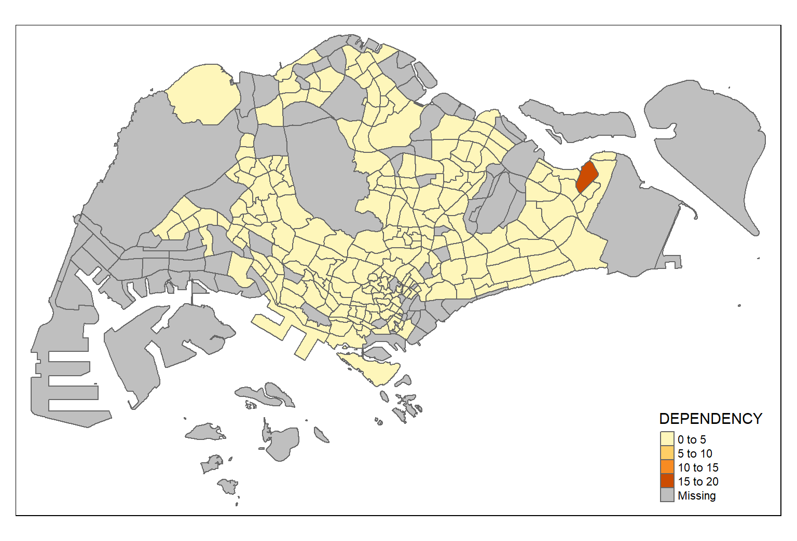

pacman::p_load(sf, tmap, tidyverse)Choropleth Mapping
Geospatial Data
This post explores the functions in R to plot choropleth maps.
1. INITIAL
1.1 Loading R Packages
The following are the packages required for the hands-on exercise :
1.2 Data Importation
1.2.1 Import Geospatial Data
Import Singapore Urban Redevelopment Authority(URA) Master Plan 2014 Subzone Boundary from data.gov.sg into mpsz simple feature data frame -
mpsz = st_read(dsn = "data/geospatial",
layer = "MP14_SUBZONE_WEB_PL")Reading layer `MP14_SUBZONE_WEB_PL' from data source
`D:\jephOstan\geospatial_jtz\ho\data\geospatial' using driver `ESRI Shapefile'
Simple feature collection with 323 features and 15 fields
Geometry type: MULTIPOLYGON
Dimension: XY
Bounding box: xmin: 2667.538 ymin: 15748.72 xmax: 56396.44 ymax: 50256.33
Projected CRS: SVY211.2.2 Import Aspatial Data
Import Singapore Urban Redevelopment Authority(URA) Master Plan 2014 Subzone Boundary from data.gov.sg into mpsz simple feature data frame -
popdata <- read_csv("data/aspatial/respopagesextod2011to2020.csv")1.3 Data Inspection
1.3.1 Retrieve Information
glimpse(popdata,60)Rows: 984,656
Columns: 7
$ PA <chr> "Ang Mo Kio", "Ang Mo Kio", "Ang Mo Kio", "An…
$ SZ <chr> "Ang Mo Kio Town Centre", "Ang Mo Kio Town Ce…
$ AG <chr> "0_to_4", "0_to_4", "0_to_4", "0_to_4", "0_to…
$ Sex <chr> "Males", "Males", "Males", "Males", "Males", …
$ TOD <chr> "HDB 1- and 2-Room Flats", "HDB 3-Room Flats"…
$ Pop <dbl> 0, 10, 30, 50, 0, 0, 40, 0, 0, 10, 30, 60, 0,…
$ Time <dbl> 2011, 2011, 2011, 2011, 2011, 2011, 2011, 201…2. DATA PROCESSING
2.1 Data Wrangling
Following are the additional variables will be needed for later choropleth plotting -
YOUNG : age group 0 to 4 until age group 20 to 24.
ECONOMY ACTIVE : age group 25 - 29 until age group 60 - 64.
AGED : age group 65 and above.
TOTAL : all age groups.
DEPENDENCY : the ratio between young & aged against the economy active group.
popdata2020 <- popdata %>%
filter(Time == 2020) %>%
group_by(PA, SZ, AG) %>%
summarise(`POP` = sum(`Pop`)) %>%
ungroup() %>%
pivot_wider(names_from = AG, values_from = POP) %>%
mutate(YOUNG = rowSums(.[3:6]) + rowSums(.[12])) %>%
mutate(`ECONOMY ACTIVE` = rowSums(.[7:11]) + rowSums(.[13:15])) %>%
mutate(`AGED` = rowSums(.[16:21])) %>%
mutate(`TOTAL` = rowSums(.[3:21])) %>%
mutate(`DEPENDENCY` = (`YOUNG` + `AGED`)/`ECONOMY ACTIVE`) %>%
select(`PA`,`SZ`,`YOUNG`,`ECONOMY ACTIVE`,`AGED`,`TOTAL`,`DEPENDENCY`)2.2 Merging Geospatial & Aspatial Data
popdata2020 <- popdata2020 %>%
mutate_at(.vars = vars(PA, SZ),
.funs = list(toupper)) %>%
filter(`ECONOMY ACTIVE` > 0)mpsz_pop2020 <- left_join(mpsz, popdata2020,
by = c("SUBZONE_N" = "SZ"))write_rds(mpsz_pop2020, "data/mpszpop2020.rds")3. CHOROPLETH MAPPING
3.1 Mapping with tmap
3.1.1 Plot with qtm( )
tmap_mode("plot")
qtm(mpsz_pop2020,
fill = "DEPENDENCY")